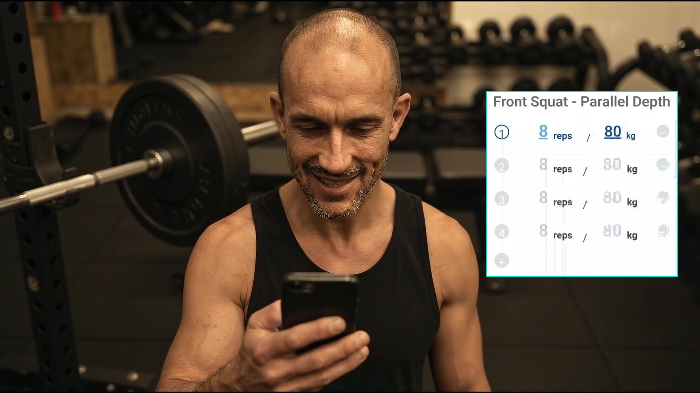
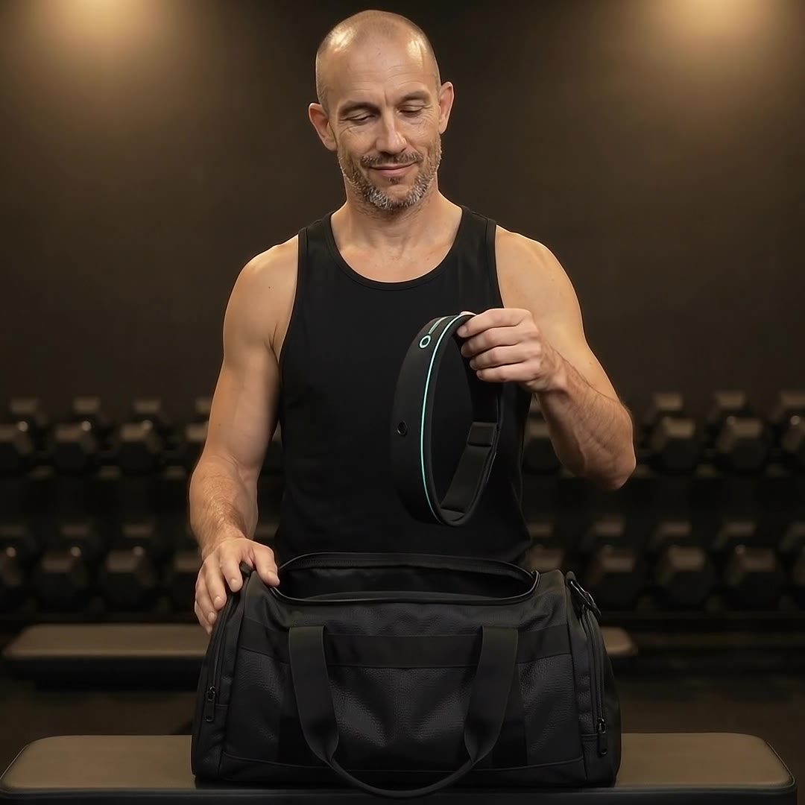
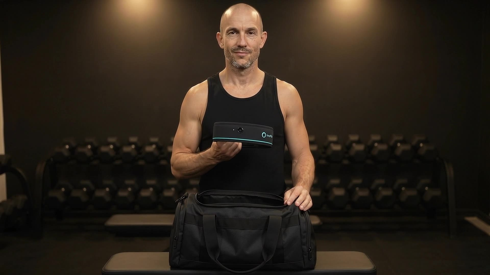
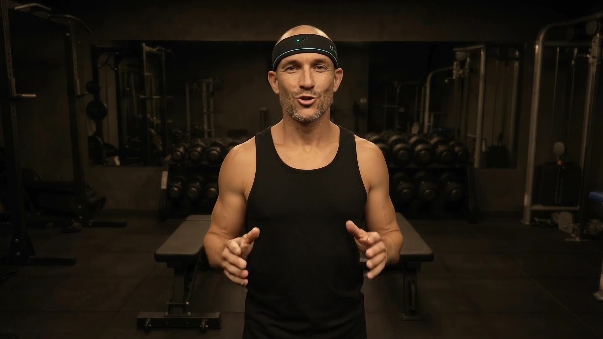
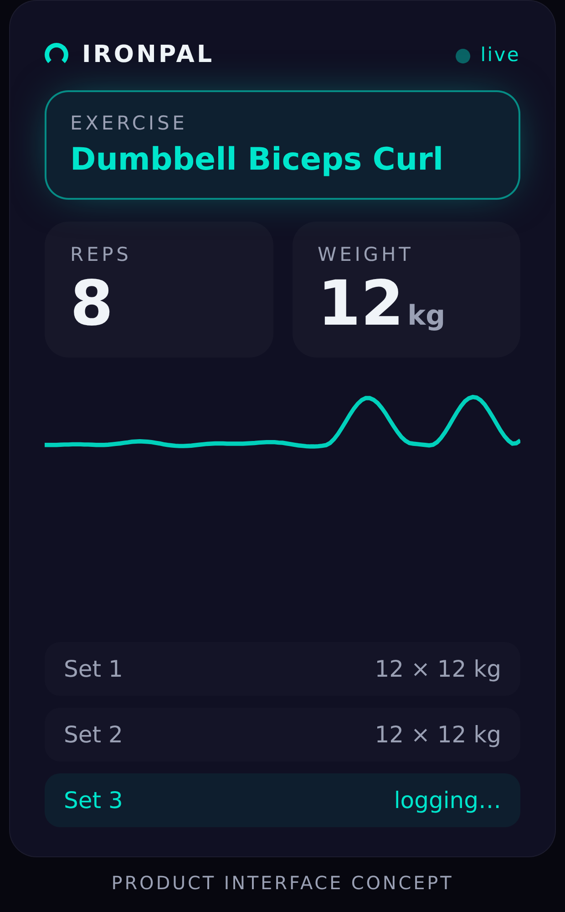
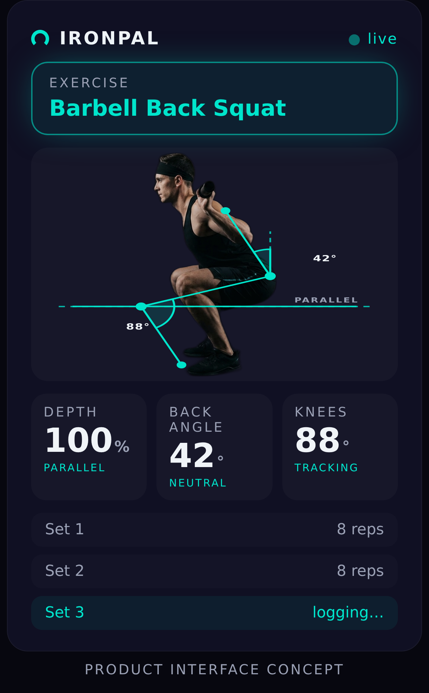
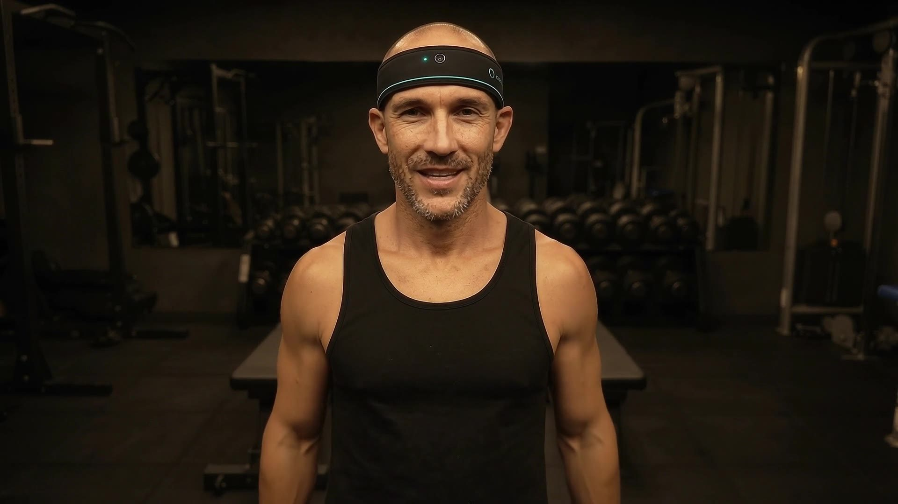

A headband that watches your set and logs the exercise, your reps and the weight on the bar — automatically. You type nothing.
Peter Dermek · Startup Awards Slovakia 2026 · Lifestyle · ironpal.co

Problem
Phone out. Gloves off. Thumb-typing 3 × 8 @ 80 kg between sets. Every rep logged by hand is a rep you stopped to remember — the rhythm breaks, the numbers get fudged, half of them never make it in.
Billions poured into AI, and every tracker on the market still asks you to type the set.
Why nobody else does this
| Device | Picks the exercise? | Counts reps? | Reads the weight? |
|---|---|---|---|
| Wrist trackersGarmin · WHOOP | auto, often wrong | unreliable, misses leg work | ✕ estimated from body mass |
| Bar IMU sensorsEnode · GymAware | manual / learned per lift | drops heavy reps | ✕ manual entry |
| Camera appliancesTempo | in-class only | yes, in class | ✕ only their own marked plates |
| IronPal | automatic, from your point of view | sensor fusion — motion + camera | ✓ any free weight or stack — being built |
Automatic free-weight reading is an open gap across the entire market. It is the hard problem we are building, and the reason IronPal exists. Sources: product documentation and peer-reviewed validation studies, June 2026.

Solution

The hardware
How it works

In the app


Traction
Market
Our wedge is the lifter who already logs by hand. Every user of a logging app or a bar sensor has proven they want the number — we remove the typing.
Business model
Sold direct, launched on Kickstarter. Early-bird up to ~50 % off the launch price for the first 200 backers.
After the bundled months: the log, the levels, the model that keeps learning your lifts.
The first lifter at a gym maps its stations and stacks; every later member starts from that pack. A gym can sponsor it.
Why now
Three things that were not true five years ago.
Measured: 4.4 ms on a Galaxy A52. Recognition can stay on the device — private, offline, free to run.
The one thing that makes weight reading attackable without instrumenting the gym or the bar.
The largest wearables now estimate training load — from body-mass models, because they cannot see the bar. We can.
Roadmap
A phone on the headband. On-device rep engine, self-training model, the app and its test suites.
The integrated band with its own camera and motion sensors. Hand-built units at ≈ $130–160 each.
The first 200 early-bird backers; weight reading validated on the most-lifted exercises first.
Bands to backers; the first gyms mapped by their first lifters.

Team
Peter Dermek — solo technical founder. A hybrid athlete who got tired of typing reps mid-set, and went to build the thing that would read the bar.
Designs, builds, shoots and ships everything himself — hardware, app, model, film — directing AI agents for what would otherwise take a team. The whole build is public.
First hire: hardware & manufacturing.
Fundraising
The capture module, hand-built then small-batch — the hardware the campaign ships.
On the twenty most-lifted exercises, measured against the bar — the claim earned before it is made.
Kickstarter launched and delivered; the first gyms mapped.